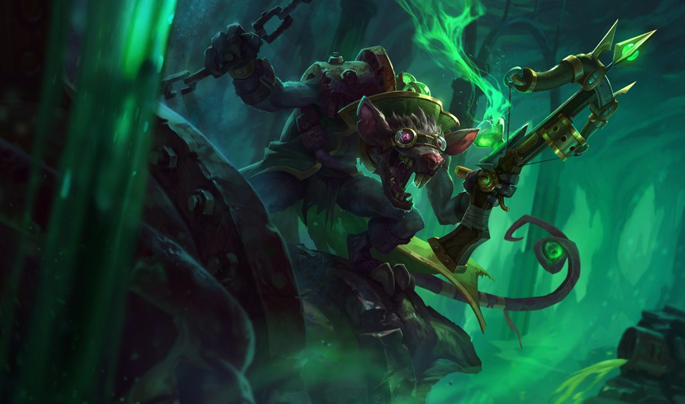

트위치
트위치
트위치, 역병 쥐
Twitch, the Plague Rat

1. 배경
2. 스킬
2.1. 패시브 - 맹독(Deadly Venom)
2.2. Q - 매복(Ambush)
독에 감염된 적 챔피언이 죽으면 이 스킬의 재사용 대기시간이 초기화됩니다.
위장 상태일 때는 적 챔피언의 감지 범위 안에 들어가지 않는 한 시야에 보이지 않습니다.
2.3. W - 독약 병(Venom Cask)
독구름 안의 적은 이동 속도가 감소하고 매초 맹독 중첩이 쌓입니다.
2.4. E - 오염(Contaminate)
2.4. R - 무차별 난사(Spray and Pray)
이 스킬을 사용해도 위장 상태가 해제되지 않지만 기본 공격을 하면 해제됩니다.
3. 장점
관통하는 초장거리 기본 공격에서 나오는 광역 폭딜 능력
매복이 갖는 막대한 잠재력
우월한 DPS
주도권을 잡았을 때부터 얻을 수 있는 팀적인 스노우볼링
상기한 장점들로 인한 압도적인 후반 캐리력
4. 단점
높은 성장 난이도
리스크를 동반하는 암살
생존기의 부재

저작물은 CC BY-NC-SA 2.0 KR에 따라 이용할 수 있습니다. (단, 라이선스가 명시된 일부 문서 및 삽화 제외)